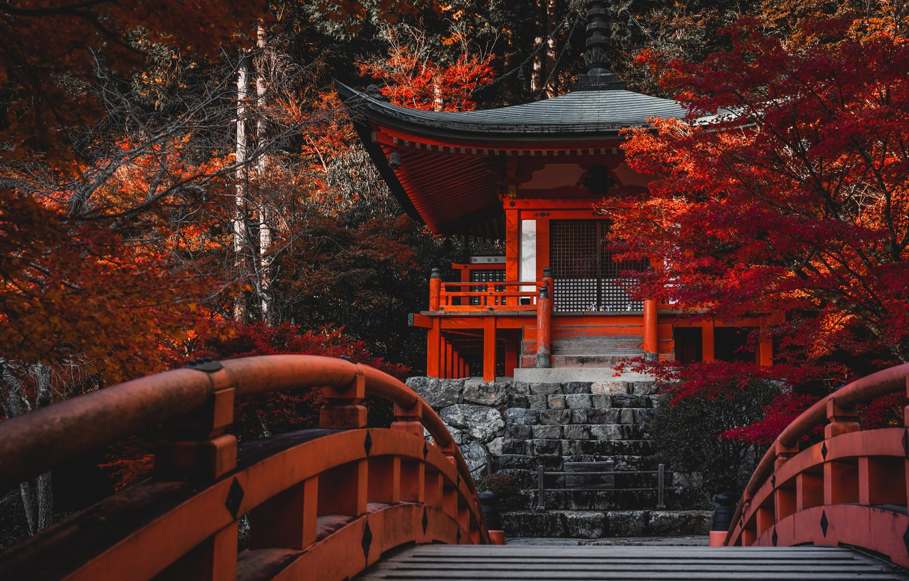

Киото — город с богатой историей, известный своими храмами, садами и традиционной японской архитектурой.
Осень в Киото — это волшебное время года, когда город окрашивается в яркие оттенки красного и оранжевого. Парки и сады превращаются в живописные полотна, а древние храмы утопают в огненных листьях клёнов. Прогулки по Киото осенью — это незабываемый опыт, наполненный атмосферой уюта и традиционной японской эстетики.
